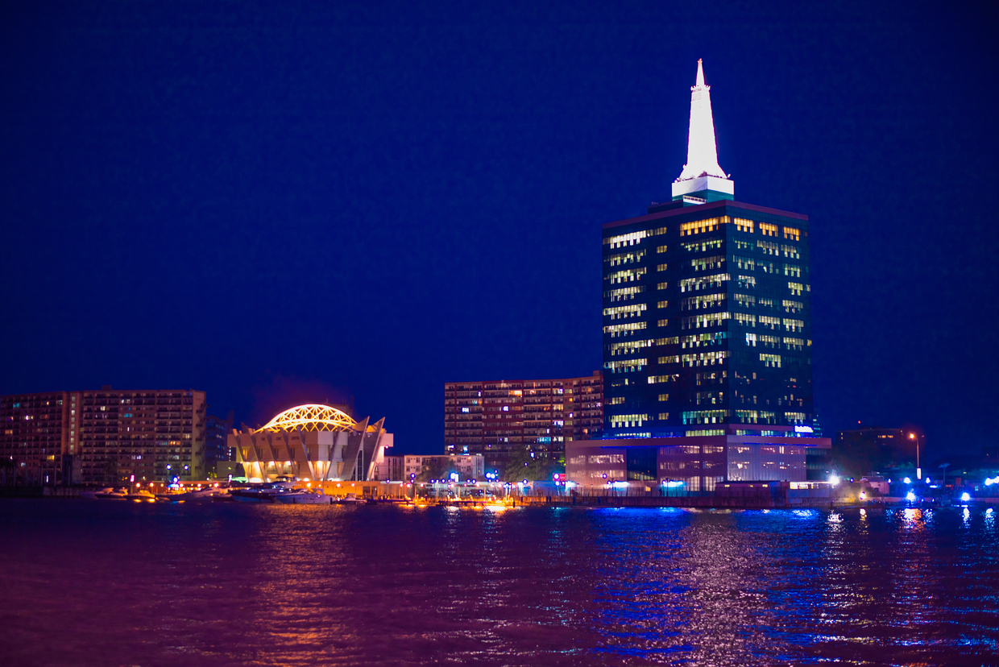
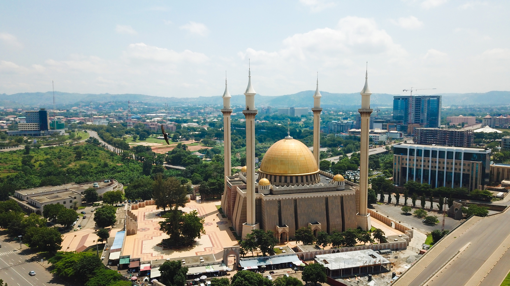
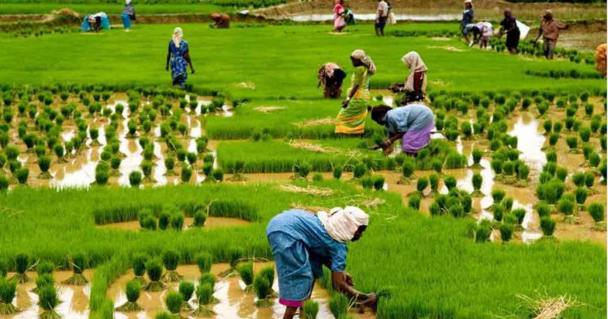
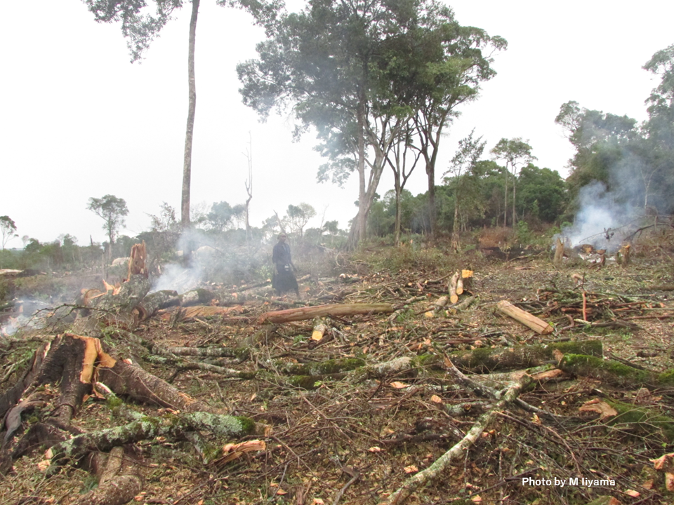
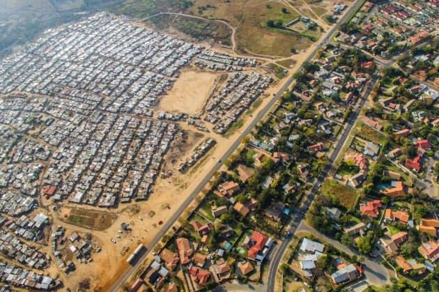
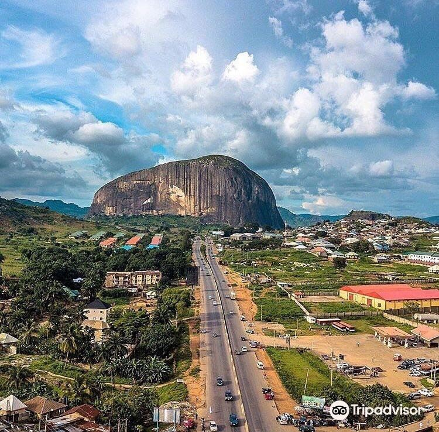
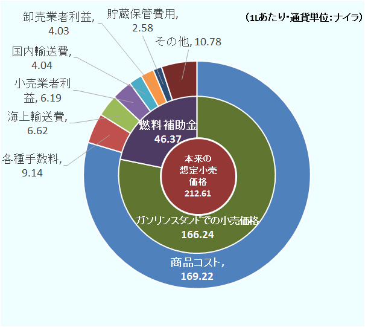
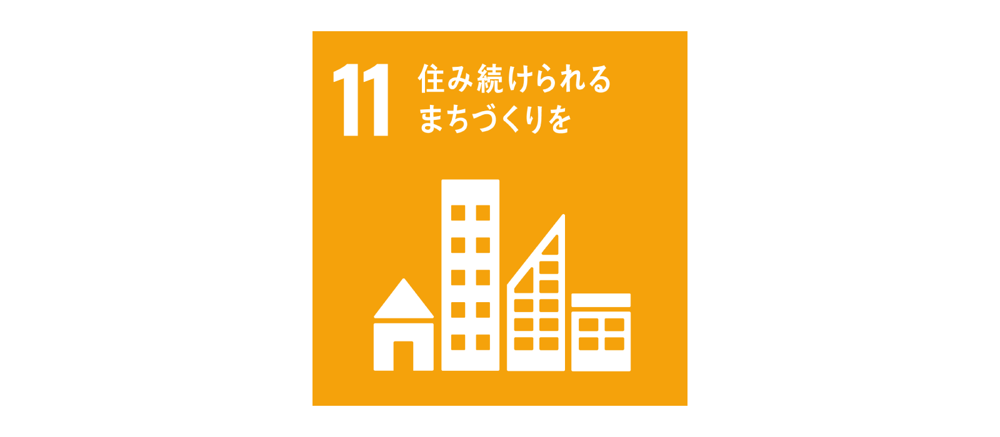
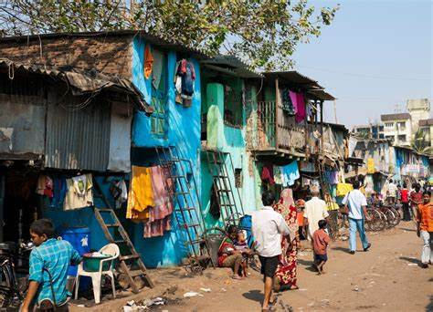

ナイジェリア紹介
１．位置や分布
ナイジェリアは西アフリカに位置し、大西洋に面しています。国土の面積は約923,768平方キロメートルで、アフリカ大陸で最も人口が多い国の一つです。また、アフリカ最大規模の経済規模を有してます。

２．場所
ナイジェリアの首都はアブジャですが、最大の都市はラゴスで、経済の中心地として知られています。面積は日本の２．４倍といわれています。
 ３．人間と自然環境との相互依存関係
ナイジェリアでは農業や漁業などの自然資源が重要ですが、同時に森林破壊や環境汚染などの課題もあります。持続可能な開発が求められています。
 ４．空間的相互作用
ナイジェリアでは、経済活動や社会交流が主に都市部で集中しており、特にラゴスやアブジャなどの大都市が地域間の中心的なハブとなっています。農村部との相互作用には交通インフラの整備状況が大きく影響し、物流や情報の流れが地域間の経済格差を生んでいます。
５．地域
ナイジェリアは、北部のサバンナ地帯から南部の熱帯雨林地域まで、多様な地理的特性を持っています。主要な地域には、商業と産業の中心であるラゴスがある西部、政治と行政の中心であるアブジャが位置する中部、農業が盛んな東部、および石油産業が重要な南部が含まれています。  ６．SDGs（持続可能な開発目標）
ナイジェリアは特にスラムに住む都市人口の割合の低下や直径2.5ミクロン未満の粒子状物質（PM2.5）の年平均濃度が減少しています。
 